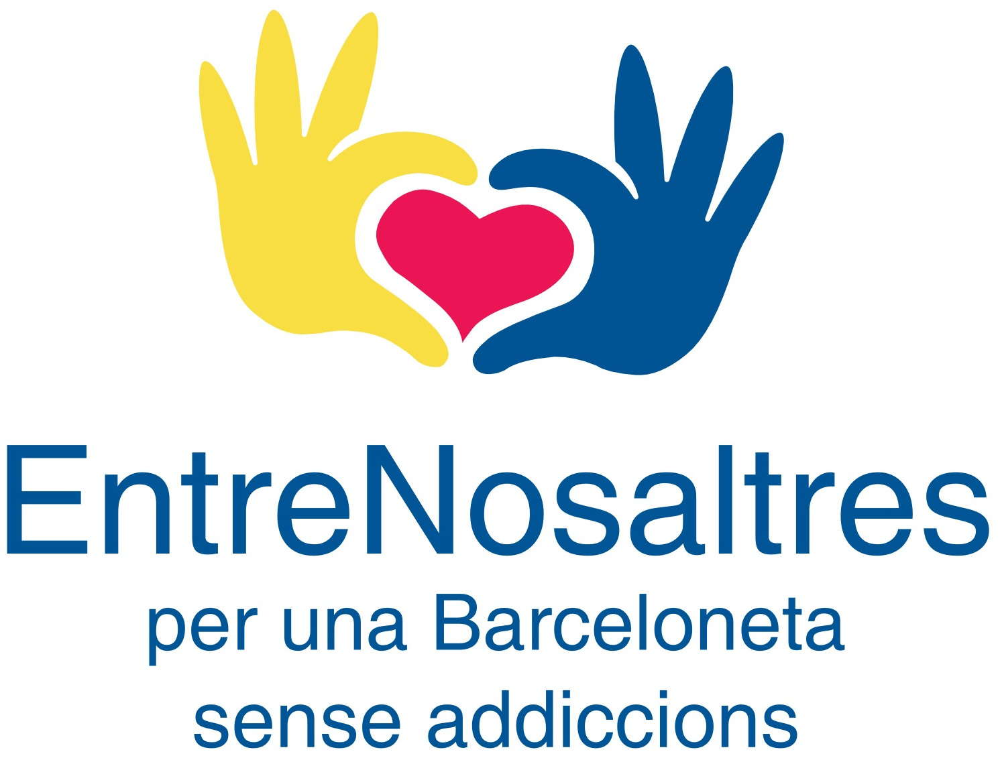

La Xarxa EntreNosaltres treballa la prevenció i l’atenció d’addiccions a la Barceloneta. És un objectiu que s’està treballant en el marc del Pla Comunitari des del 2011, com a resultat de la diagnosi sobre la salut al barri portada a terme per part de l’Agència de Salut Pública de Barcelona en 2010, amb el programa Salut als Barris. Al diagnòstic es detectava el consum de substàncies (fonamentalment alcohol i cànnabis) i les addiccions com a un dels problemes més alarmants a la Barceloneta, en l’àmbit de la salut.
Des de llavors, es va començar a articular una xarxa d’entitats veïnals d’exaddictes i familiars d’addictes, així com professionals de serveis sanitaris i educatius del barri, per treballar comunitàriament el tema a través del projecte EntreNosaltres. Els objectius de la iniciativa EntreNosaltres són informar i promoure la reflexió i el debat al voltant de les addiccions, per tal de poder treballar la prevenció i, al mateix temps, orientar i donar suport als addictes i als seus familiars. Per això, EntreNosaltres crea una guia de recursos a l’abast de qui ho necessiti.
La Xarxa EntreNosaltres organitza les següents activitats:
EntreNosaltres al Marítim!
exposicions orientades a la prevenció amb joves
sessions de testimoniatge d’exaddictes i familiars d’addictes a l'institut
sessió sobre addiccions en el marc de l’Escola de Salut
Marxa EntreNosaltres
altres
El projecte comunitari de prevenció i atenció d'addiccions a la Barceloneta està impulsat per una xarxa d’entitats veïnals d’ex addictes i familiars d’addictes, així com professionals de serveis sanitaris i educatius del barri:
Grup d'Ajuda Mútua d'Alcohòlics Rehabilitats
Associació Barceloneta Alerta
Alateen
Obra Social Santa Lluïsa de Marillac
APC (Programa A Partir del Carrer-Serveis Socials Barceloneta)
CAS Barceloneta-Hospital del Mar
Casal Cívic de la Barceloneta
CAP Barceloneta
Centre Cívic Barceloneta
Agència de Salut Pública de Barcelona
Projecte Franja Barceloneta
IES Joan Salvat-Papasseit
Club Marítim Claror
Club Natació Atlètic-Barceloneta
Club Natació Barcelona
Equipament de Caritas de la Barceloneta
Espai de Mar
Associació Esportiva Ciutat Vella
Districte Ciutat Vella
Col·labora: Associació de Comerciants i Industrials de la Barceloneta (ACIB), Voluntaris 2000
Qualsevol col·lectiu, entitat o veí/na a títol individual que desitgi participar, pot col·laborar a l'organització d'activitats concretes, com la Marxa, o inclús incorporar-se de manera permanent a la Xarxa EntreNosaltres.